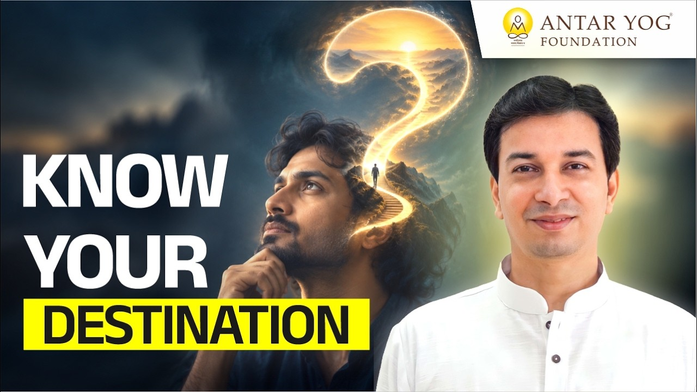

सब व्यस्त हैं, पर किस लिए?
हम सब अपने-अपने कामों में उलझे हैं। दफ़्तर का काम, घर का काम, यह काम, वह काम। गृहिणी भी यही कहती है और दफ़्तर जाने वाला भी।
पर गुरुदेव एक सीधा-सा प्रश्न रखते हैं: क्या आप वास्तव में जानते हैं कि आपका कर्म (कर्तव्य, जीवन का वास्तविक कार्य) क्या है? और क्या आप सचमुच जानते हैं कि आप कौन हैं, कहाँ से आए हैं और कहाँ जाएँगे?
अध्यात्म का सरल अर्थ
अध्यात्म (Spirituality) का अर्थ है आत्मा का अध्ययन। अध्ययन किसका? आत्मा का।
जीवन का बीच वाला हिस्सा तो हमें दिखता है। पर हम कहाँ से आए और कहाँ जाना है, यह आरंभ और अंत हमें पता ही नहीं।
जो हमने कभी नहीं देखा
आपने दूसरों को जन्म लेते देखा है, पर अपना जन्म नहीं देखा। अपनी मृत्यु भी नहीं देखी। इस शरीर के साथ ये दोनों बातें आपकी आँखों से छिपी हैं।
दुनिया की जनसंख्या बढ़ रही है। जीव-जंतु, पशु-पक्षी, हर कोई जन्म ले रहा है। कोई राजा बनकर जन्मा, कोई कुत्ता-बिल्ली, कोई चोर, कोई राक्षस। क्यों?
और लोग जाते कहाँ हैं? कोई दुर्घटना में, कोई बम विस्फोट में, कोई बीमारी से, कोई स्वाभाविक मृत्यु से। हमारे दादाजी, परदादीजी, वे कहाँ गए?
एक दिन मैं भी जाऊँगा। तो मैं कहाँ जाऊँगा? और मैं आया कहाँ से था? क्या आपने कभी यह सोचा है?
झगड़ों से पहले एक प्रश्न
हम शिकायत करते रहते हैं: मेरी भाभी ऐसी, मेरा बेटा ऐसा, मेरी माँ ऐसी, मेरा पड़ोसी ऐसा, मेरा बॉस खराब।
पर क्या कभी सोचा कि ये लोग आपके जीवन में आए कहाँ से?
कोऽहम्: बच्चा क्यों रोता है?
आदि शंकराचार्य यही प्रश्न उठाते हैं। बच्चा रोता है तो माँ अपनी सामान्य वासना (इच्छा, संस्कार) से सोचती है: इसे भूख लगी होगी। उसकी सोच खाने-पीने से आगे जाती ही नहीं।
शंकराचार्य कहते हैं, बच्चा खाने-पीने के लिए नहीं रोता। जन्म के पहले कुछ दिनों में उसे बोध होता है: मेरा जन्म हुआ ही क्यों? वह "कोऽहम्, कोऽहम्" कहकर रोता है।
कोऽहम्
"मैं कौन हूँ?"
कोऽहम् का अर्थ है: मैं कौन हूँ? (Who am I?) और इसका उत्तर है:
सोऽहम्
"सोऽहम् अर्थात् तू वही है, तू परमात्मा है (I am That)।"
ये दोनों प्रतीक हैं, जिन्हें आदि शंकराचार्य ने एक कवि के रूप में कहा। गुरुदेव बताते हैं कि ये दोनों बातें शिविर में सिखाई जाती हैं।
ज्ञानेश्वर महाराज का बचपन
संत ज्ञानेश्वर भी बचपन में रोते थे। उनके माता-पिता उन्हें कंधे पर लेकर भगवद्गीता के श्लोक अर्थ सहित सुनाते थे, और वे शांत होकर सो जाते थे।
गुरुदेव कहते हैं, आप भी आज़माकर देखिए। बच्चे को "ॐ" मंत्र, या ऐसा कुछ, अर्थ के साथ सुनाइए। वह शांत हो जाएगा। हाँ, कभी-कभी वह भूख से भी रोता होगा, इससे इनकार नहीं।
खिलौना और माया
पर हम क्या करते हैं? खिलौना पकड़ा देते हैं, "ले, कुकड़ू-कू" कहकर बहलाते हैं। आचार्य जी कहते हैं कि वह माया में खेलना सीख जाता है और भूल जाता है कि वह किसके लिए आया था।
हम उसे इसी संसार में ले आते हैं, और फिर पूरा जीवन वह इसी माया (संसार का भ्रम) में अटका रह जाता है।
यही विचार आपको क्यों आया?
आप सोचते हैं, मुझे बड़ा व्यापार करना है, पर हो नहीं रहा। पहले यह सोचिए: व्यापार का ही विचार क्यों आया? गुरु बनने का क्यों नहीं? राजा बनने का क्यों नहीं?
किसी के मन में राजा बनने का विचार आया, किसी के मन में गुरु बनने का। किसी के मन में शराब पीने का विचार आया, आपके मन में नहीं आया।
कोई कहता है, नौकरी नहीं मिल रही, इंजीनियरिंग में अटक गया हूँ, एमबीए नहीं मिल रहा। पर यह विचार तुम्हें आया ही क्यों? सकारात्मक और नकारात्मक सोच की बात तो बाद में आती है।
आज आप जिस लक्ष्य के पीछे भाग रहे हैं, क्या आपने कभी पूछा कि वह विचार आपके भीतर आया कहाँ से?
विचार का मूल
हर किसी को पाठ्यक्रम की तरह एक-सा विचार क्यों नहीं आता? निश्चित ही इसका कोई मूल (origin) है। उसे जाने बिना प्रगति कैसे होगी?
आँखों पर पट्टी और गाड़ी
कल्पना कीजिए: रास्ता मालूम नहीं, नक्शा मालूम नहीं, आप कहाँ खड़े हैं यह भी नहीं पता। आँखों पर पट्टी बँधी है, गाड़ी चला रहे हैं, और गंतव्य पता नहीं।
ऐसी गाड़ी चलाने का क्या लाभ?
हमें पता होना चाहिए कि हम कहाँ से आए हैं। गलत दिशा में चले गए, तो मुड़कर वापस आना चाहिए। और लक्ष्य कहाँ है, यह भी मालूम होना चाहिए।
सच्चे मन से सोचकर बताइए: क्या यह मालूम होना चाहिए या नहीं?
मुख्य बातें
- अध्यात्म का अर्थ है आत्मा का अध्ययन: मैं कौन हूँ, कहाँ से आया, कहाँ जाऊँगा।
- हम अपने कामों में व्यस्त हैं, पर यह नहीं जानते कि हमारा वास्तविक कर्म क्या है।
- शंकराचार्य के अनुसार नवजात शिशु "कोऽहम्" (मैं कौन हूँ) पूछता हुआ रोता है, और उत्तर है "सोऽहम्" (तू वही परमात्मा है)।
- खिलौनों और बहलावे से बच्चा माया में खेलना सीखता है और अपने आने का उद्देश्य भूल जाता है।
- हमारे मन में कोई विशेष विचार क्यों आता है, उसके मूल को जाने बिना सच्ची प्रगति नहीं होती।
- बिना यह जाने कि हम कहाँ से आए और कहाँ जाना है, जीवन आँखों पर पट्टी बाँधकर गाड़ी चलाने जैसा है।
